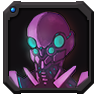
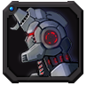
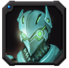
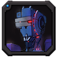
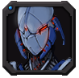

游戏介绍
| 头像 | 名称 | 产出兵营 | 介绍 |
|---|---|---|---|
 |
艾斯特 | 初级兵营、中级兵营、高级兵营、神机营 | 不善言语却甘愿牺牲自己与人类交换金币，促进兵营基地建设 |
 |
雷斯 | 初级兵营、中级兵营、高级兵营、神机营 | 速度最快的战士，却愿低下高贵的头颅换取兵营基地的建设 |
|  | 穆得 | 中级兵营、高级兵营、神机营 | 一位高效率的战士，宁愿牺牲自己也要获得能够激活领袖的宝石 |
 |
科亚 | 中级兵营、高级兵营、神机营 | 超级自恋的家伙，但是危机来临却能够挺身而出 |
 |
奥巴斯 | 高级兵营、神机营 | 较高级别的战士，但是为了兵营基地建设会毫不犹豫地奉献自己 |
 |
玄甲 | 高级兵营、神机营 | 当能源匮乏，甘愿低下身份以换取微薄的金币维持建设 |
 |
伦特尔 | 神机营 | 强大而又啰嗦的特伦尔，充满了神秘的力量。 |
|  | 迅影 | 神机营 | 7级及以上才能研发出的高级战士，却为拯救狂信徒甘愿牺牲自己 |
 |
克罗 | 神机营 | 8级及以上才能研发出的高级战士，却为拯救狂信徒甘愿牺牲自己 |
|  | 羽刃 | 神机营 | 9级及以上才能研发出的高级战士，却为拯救狂信徒甘愿牺牲自己 |
|  | 亚特 | 神机营 | 10级及以上才能研发出的高级战士，却为拯救狂信徒甘愿牺牲自己 |
 |
圣洛丽 | 初级兵营、中级兵营、高级兵营、神机营 | 狂信徒醒悟后集结所有兵种而成的强大战士，所向无敌 |
 |
卡拉 | - | - |
|  | 狂蜂 | - | - |
士兵生长周期表